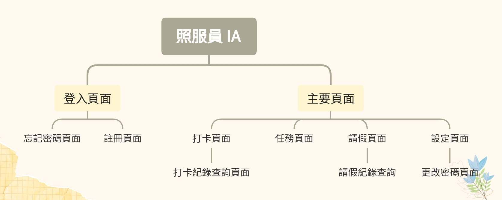

專案簡介
本專案為一款設計給照顧服務員使用的手機 App，主要功能包含上下班打卡、工作任務清單、緊急任務通知與請假申請等。 使用者多為年長工作者，因此介面設計需清晰易讀、操作直覺，並能應對緊急狀況下的快速操作需求。
背景與需求
這次的專案是少數純粹接 UI/UX 設計的合作案。對接方為開發 App 的工程師，對方希望整體介面以「簡單、好操作」為主。 該 App 為其公司內部系統，並非公開應用，因此更強調實用性與內部流程整合；這也讓我在設計時能更貼近「設計該為誰而設」這個核心。
親切的小熊護理師 Logo 設計
內容發想與 Persona
為了確保功能對照服員實際需求，我在專案初期與對方進行多次溝通，確保實際設計與使用情境相符合。 我們聚焦在 5 大功能：打卡、任務清單、緊急通知、請假申請與首頁提醒，並依據日常使用頻率安排首頁模組順序。

針對目標使用者建立的 Persona
資訊架構 (IA)
為了讓整體操作流程更貼近照服員實際工作節奏，我根據使用場景與任務邏輯設計出完整的資訊架構， 並簡化為「首頁聚合狀態提醒＋四大模組導向」的主流程設計，降低導航層級與操作時間。
技術與規劃
本專案使用 Figma 進行 UI 設計與元件管理。由於使用者多為中高齡族群，我主動提出設計建議， 包含：提升字級（至少 18px）、操作區域最小為 48px 以上、色彩搭配使用高對比的深紫與米白底組合。
Figma 互動原型展示 (可直接操作)
此外，我也考量到該族群對層級過多的操作流程較難適應，因此在首頁設計中， 將打卡時間直接呈現於主畫面上方，並以「上班／下班是否已打卡」為主要視覺焦點，讓使用者一打開 App 即可掌握目前狀態。
挑戰與解法
「讓科技不再是長輩的障礙，而是工作的幫手。」
1. 使用者年齡層偏高
我刻意設計了對比明顯的顏色系統與大尺寸按鈕，並在首頁設計上強化視覺動線，確保他們能在第一眼就「看懂現在該做什麼」。
2. 緊急任務資訊需即時傳達
設計了全域的「緊急任務推播」，無論在哪個頁面，緊急任務都會優先顯示；首頁同時以文字提示，避免遺漏。
3. 畫面資訊取捨
採用「模組化 + 分區配色」的方式，讓每一區塊擁有清晰的任務邏輯。例如將請假申請、紀錄查詢拆分為獨立入口，避免資訊混淆。
我的收穫
這次專案讓我第一次完整接觸到面向年長工作者的應用設計，過程中學到的不只是視覺上的調整技巧，更是如何真正站在使用者角度思考流程與操作邏輯。 也因為整體需求清楚、合作對象信任度高，讓我能以設計師的角度主動提出模組優化與流程簡化的建議，累積了寶貴的設計主導經驗。
{kind=link}
{kind=link}